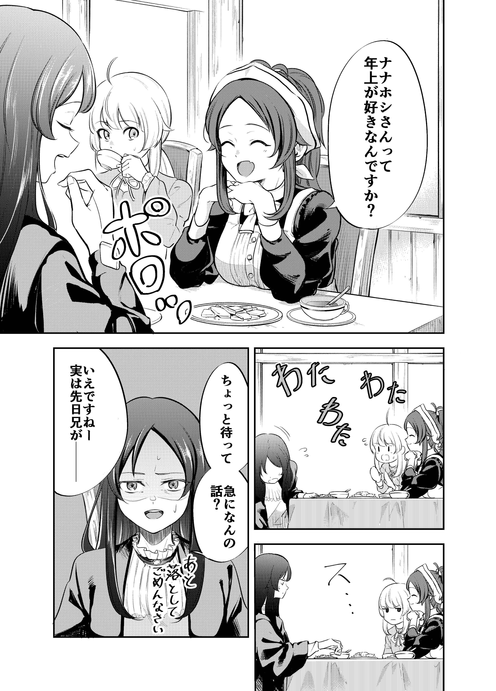
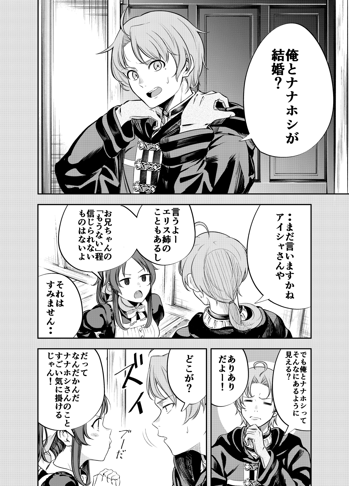
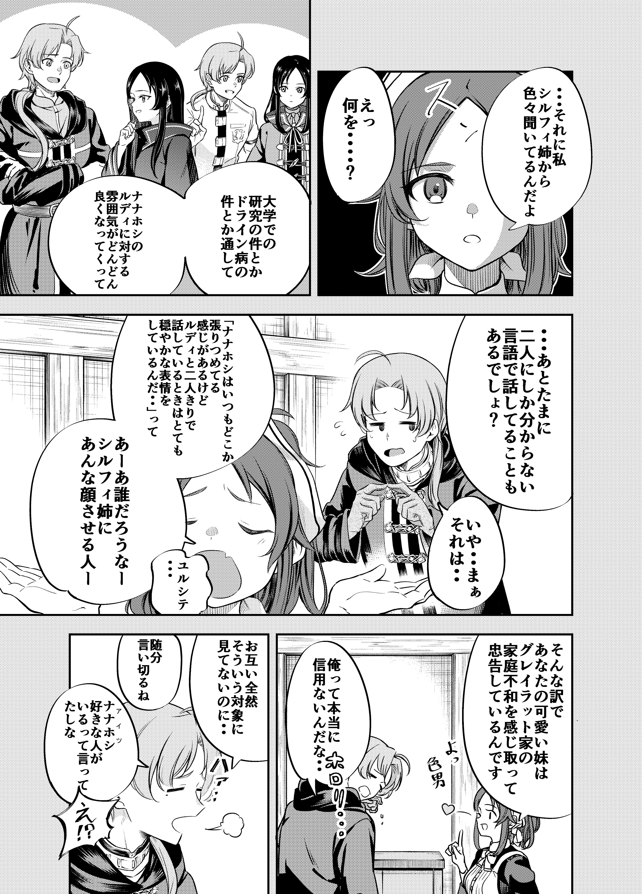
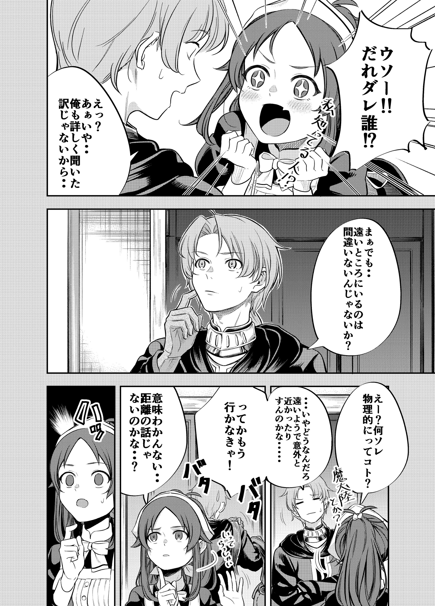
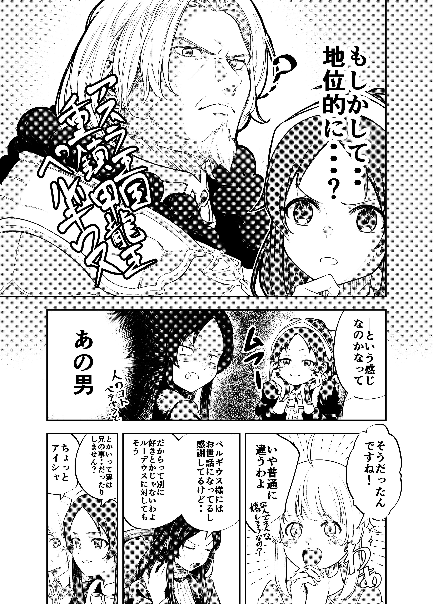
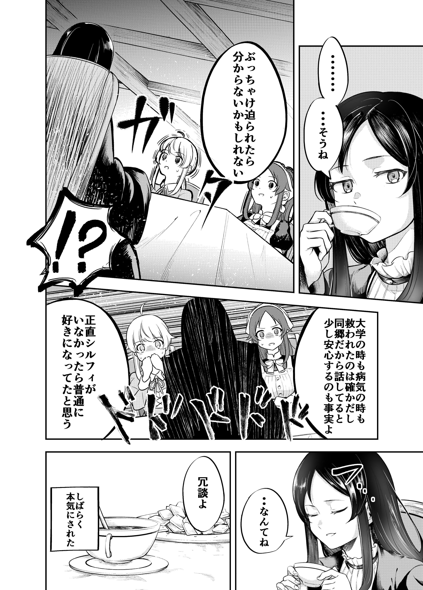

>Does nanahoshi-san like older men?
>Wait a minute, what are you suddenly talking about? (Also, sorry for dropping it)
>You don't, right--, the thing is yesterday brother...

>Me and nanahoshi marrying?
>You are still going about that huh Aisha-san
>I can. There's the incident with eris-nee, and there's nothing more untrustworthy than onii-chan's "not anymore"
>Sorry about that...
>But me and nanhoshi, do we look like that?
>Very clearly!
>How?
>I mean, you are always worried about nanahoshi-san

>Also, I hear a lot of things from sylphy-nee you know
>Like how all through the research in the university and her drain disease incident the mood between you gradually improved
>Also there are those times where you both have talks in some language no one knows right?
>No.. well, you see...
>"it feels like nanhoshi san's always tense about something, but she makes a calm expression when she talks alone with rudy" someone said.
>Aaa--, who will be the one that makes sylphy-nee feel the same--
>forgive me...
>That's why your cute little sister keeps a grasp on greyrat manor's pulse and advises you
>They really don't have faith in me, huh... (crying)
>Although we don't think about each other like that at all...
>looks like you are very confident in saying that
>She even said there's some one she loves, you see
>Ehh!?

>Really--!! Who is it, who, who!?
>Ehh? Aa, no... it's not like I asked her about the details...
>Well, but... there' probably no doubt he is in a far away place
>Ehhhh? What's that, like they are seperated by some laws of nature type of thing?
>...no, how should I put it. It seems so far away but maybe it's closer than you think....
>That said, I should be going now!
>I don't understand... so it's not a problem of distance...?

>maybe something about their social position...?
>[Asura kingdom's mainstay, armored dragon king pergius]
>I thought maybe it's something like that
>That man! (chattering about other people)
>So it was like that!
>No, that's completely wrong. (And why do you look happy?)
>I am being taken care of by pergius sama and I am grateful for it...
>But it's not like I particularly love him, and the same goes for rudeus
>That said about brother...ever feel like falling for him?
>Wait a min Aisha!

>...well, yeah
>I don't know, maybe if he incessantly went after me
>During the university and also with the drain disease, it's true I was saved by him. it's also a fact I feel a sense of relief talking with him, being from the same place and all.
>Honestly, I would have probably fell for him if sylphy wasn't there.
>...just kidding
>It's just a joke
>[They thought she was being serious for a while]